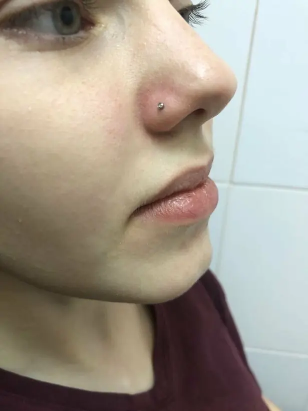
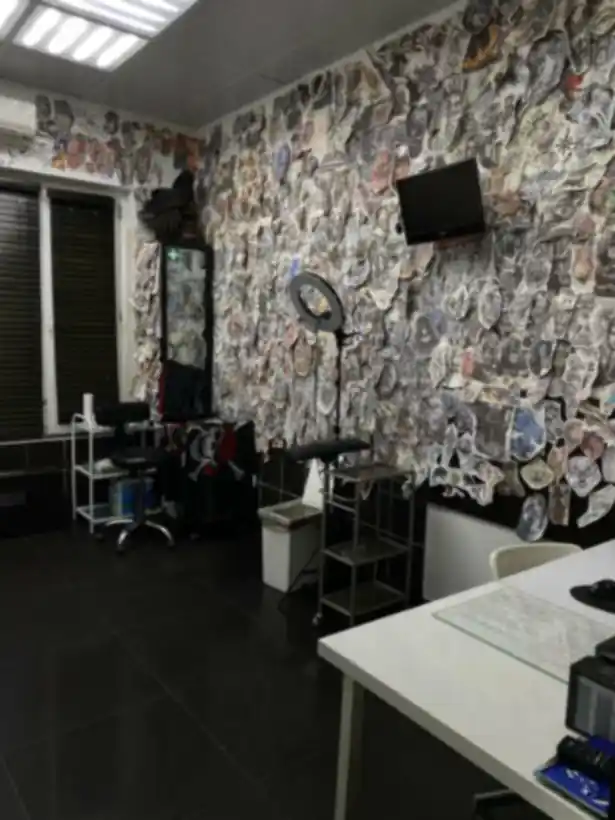
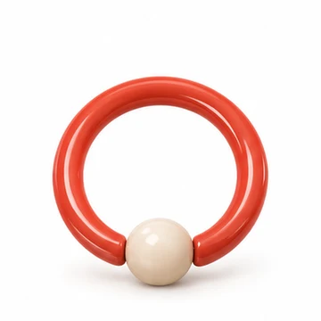
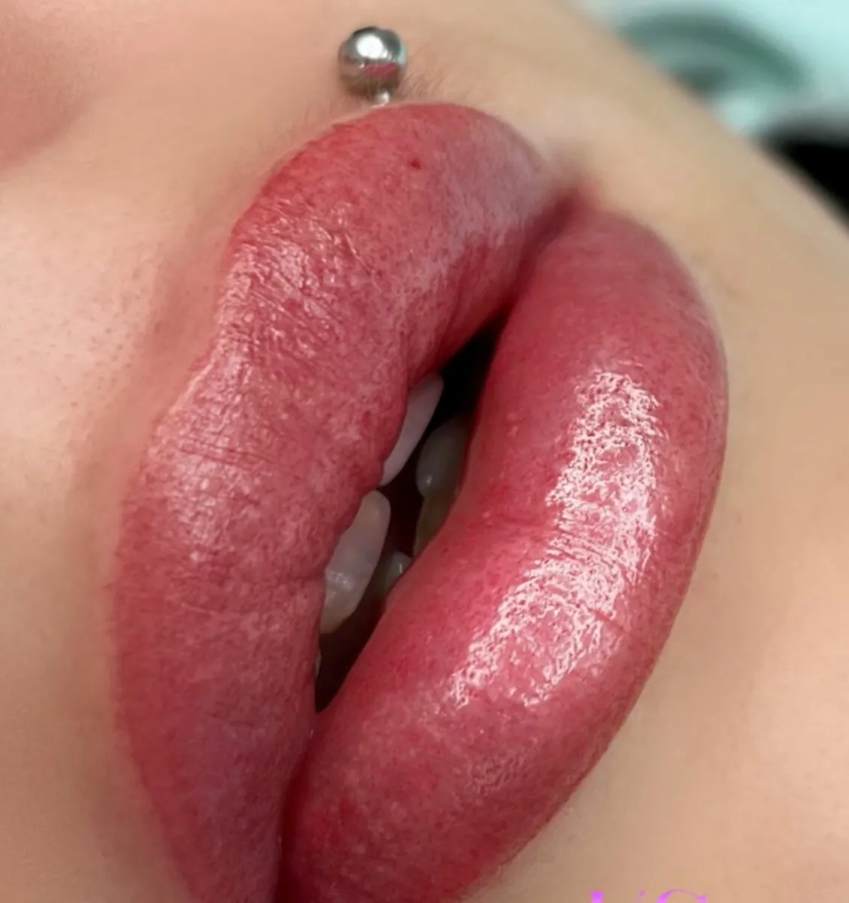
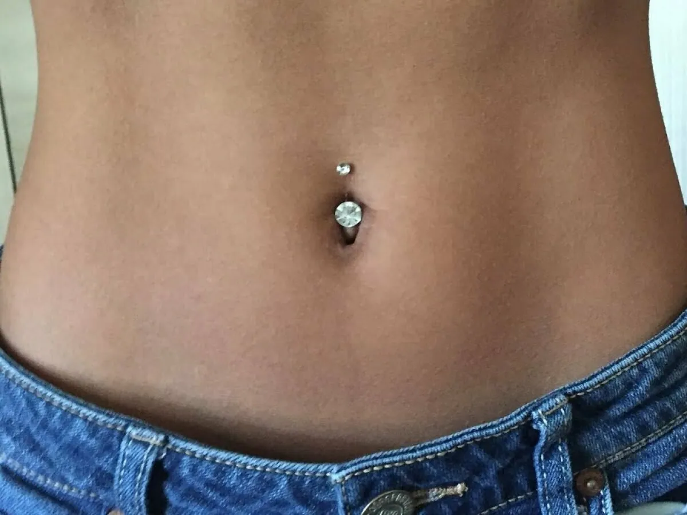
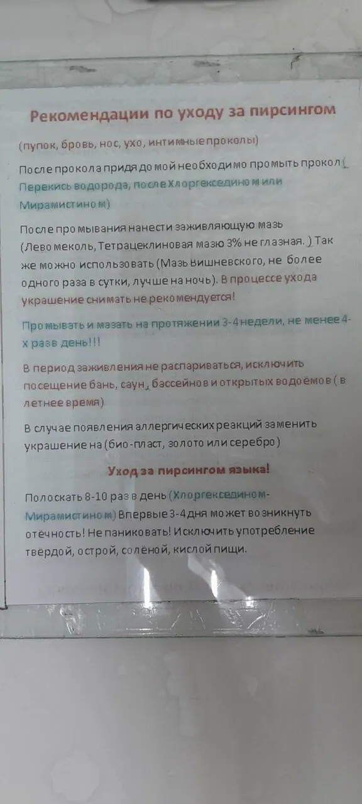
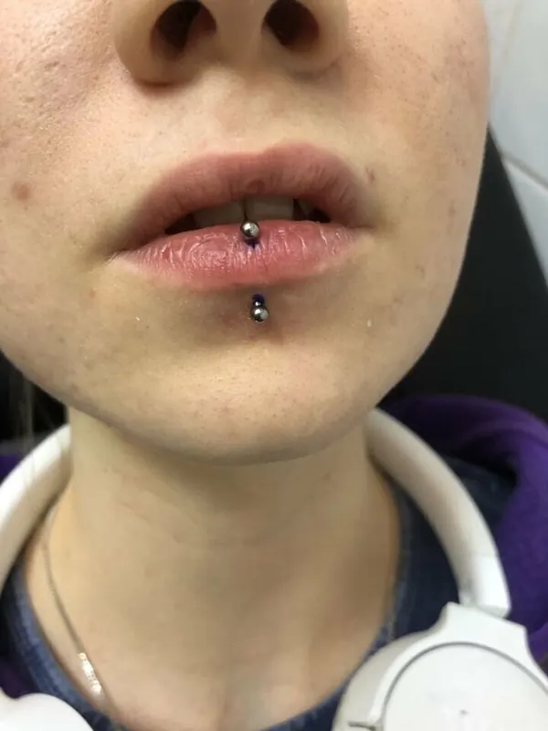

01 / 03
Нос
2 000 ₽- Крыло, септум, бридж
- Мастер подберёт место под форму носа

Памятку по уходу получаете сразу после прокола
Узнать, какой прокол мне подойдётНа фото — клиентка студии: пирсинг носа и татуировка на кисти

7 видов проколов по 2 000 ₽, украшение — от 600 ₽ Прокол иглой, в перчатках, стерильным инструментом
Прокол иглой, в перчатках, стерильным инструментом 4,8 на Яндекс Картах: 471 оценка и награда «Хорошее место 2026»
4,8 на Яндекс Картах: 471 оценка и награда «Хорошее место 2026»


 Памятка по уходу — фотографируете её в кабинете и уносите с собой
Памятка по уходу — фотографируете её в кабинете и уносите с собой Подскажем место прокола и размер украшения под вашу анатомию
Подскажем место прокола и размер украшения под вашу анатомию
 Достанем вросшее украшение и исправим неудачный прокол из другого салона
Достанем вросшее украшение и исправим неудачный прокол из другого салона Можно со своим украшением: титан или биопласт
Можно со своим украшением: титан или биопластПрокол иглой занимает секунды. В отзывах пишут: «быстро и аккуратно сделали прокол крыла носа», «процедура прошла безболезненно».
Мастер объясняет уход и даёт памятку: чем промывать, что нельзя и сколько заживает. Из отзыва: «Его правила заживления на мне сработали идеально».
В студии — украшения из хирургической стали от 600 ₽. Можно прийти со своим: титан или биопласт.
Да, с 10 лет и в присутствии родителя. Из отзыва мамы: «дочери 10 лет сделать пирсинг хряща уха… здесь не отказали».

 Tanya BЗнаток города 8 уровня
Tanya BЗнаток города 8 уровняДелала пирсинг у Олега здесь уже два раза. В 2019м и в 2024м. Сначала перекол брови делала, затем пирсинг губы. Все замечательно заживает, Олег делает всё аккуратно и стерильно, профессионально. Его правила заживления на мне сработали идеально. Ходила каждый раз со своими серьгами для прокола (как я поняла из своих в салоне есть только хир сталь, но у меня с ней плохо заживает в принципе): титан и биопласт (мастер может проконсультировать какие нужны по размеру). В общем советую :)Отзыв на Яндекс Картах
Отличный салон, быстро и аккуратно сделали прокол крыла носа. Очень вежливый и понимающий мастер Олег. Буду ходить ещё, спасибоОтзыв на Яндекс Картах
Сегодня посетили с дочкой салон Мокко, это лучший салон! В который раз делали пирсинг у мастера Олега, очень приятный мастер, всегда ходим только к нему так как он знаток своего, планирую так же сделать тату у него!!!Отзыв на Яндекс Картах
Мастера рекомендую как лучшего!!!
Любой прокол — 2 000 ₽. Украшение оплачивается отдельно: от 600 ₽. Замена или снятие украшения — 500 ₽.
Иглой, стерильным инструментом и в перчатках.
Да. Напишите мастеру заранее — он подскажет нужный размер и материал.
Да. Мастер достанет украшение и скажет, можно ли поставить новое. Позвоните или напишите — подберём ближайшее время.
Да, есть. Расскажите мастеру о состоянии здоровья и при необходимости посоветуйтесь с врачом.
Ответьте на три вопроса на этой странице, напишите в WhatsApp или позвоните: +7 (903) 961-47-22.